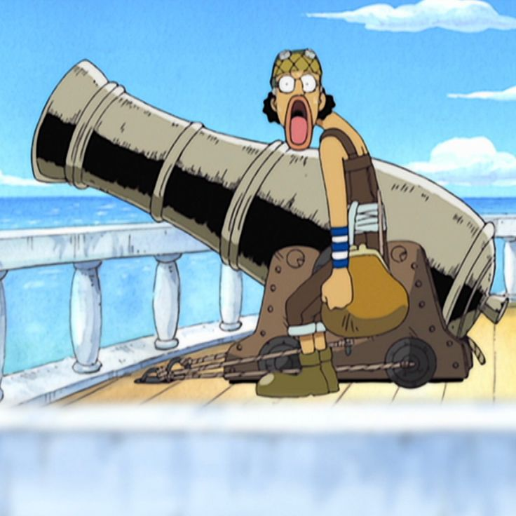

Usopp
{kind=link}
Es uno de los personajes principales de One Piece y un miembro esencial de los Piratas del Sombrero de Paja. También es conocido como "Sogeking" y es el francotirador experto y tirador de la tripulación. Usopp es originario del East Blue y es un hábil tirador de proyectiles. Es conocido por su destreza con la honda y su capacidad para lanzar objetos con gran precisión y potencia. Aunque al principio de la serie Usopp se presenta como un mentiroso y cobarde, se revela que utiliza su habilidad para contar historias como una forma de escapar de la realidad y ganar confianza.

A lo largo de su viaje con los Piratas del Sombrero de Paja, Usopp se convierte en un valiente guerrero y un compañero leal. A pesar de sus miedos y dudas iniciales, Usopp siempre está dispuesto a proteger a sus amigos y enfrentarse a enemigos poderosos cuando la situación lo exige. Aunque carece de habilidades físicas sobrehumanas, compensa esto con su astucia, ingenio y habilidad para improvisar soluciones creativas. Usopp lleva consigo un arma especial llamada "Kabuto", una honda modificada que le permite lanzar proyectiles a larga distancia con precisión mortal. Además, Usopp es un talentoso inventor y mecánico, y ha creado una variedad de dispositivos y armas para ayudar a su tripulación en batallas y situaciones peligrosas.

{kind=link}
Aunque a veces puede ser inseguro y dudar de sí mismo, Usopp se convierte en una parte integral de los Piratas del Sombrero de Paja. Su sentido del humor, su habilidad para contar historias y su lealtad hacia sus amigos lo convierten en un personaje querido tanto por los personajes dentro de la historia como por los fanáticos de la serie. Usopp es un tirador experto y guerrero valiente en los Piratas del Sombrero de Paja. A través de su viaje, supera sus miedos y dudas para convertirse en un miembro leal y valioso de la tripulación. Su habilidad con la honda, su ingenio y su destreza inventiva lo convierten en un personaje único y apreciado dentro del mundo de One Piece.
{kind=link}